二十岁那年的心动，和四十岁那年的心动，到底哪个更强烈？
当然，这是一个没有标准答案的问题。因为衡量心动的基准，早就随着岁月的流逝和见识的增长，发生了不可逆的改变。
在金融市场的技术分析中，我们有时同样面临着这样一种难以跨越时间的比较。
就说技术分析玩家入门的技术指标 MACD，自上世纪 70 年代末杰拉尔德・阿佩尔发明它以来，它几乎成了每个交易软件的标配，也是无数人技术分析的启蒙。
但这把陪伴了我们四十多年的老朋友，其实有着致命的软肋。而 2022 年 CMT 协会的 Charles H. Dow 获奖论文 “MACD-V：Volatility Normalised Momentum” 则是希望引入 ATR 指标，来进一步优化 MACD 这个经典指标。
MACD的缺陷何在
MACD 的公式很简单，缺省公式下，计算 12 周期均线与 26 周期均线的绝对差值 DIF，并基于差值计算 9 周期均线 DEA，而 MACD 就是 DIF 与 DEA 差值的两倍。
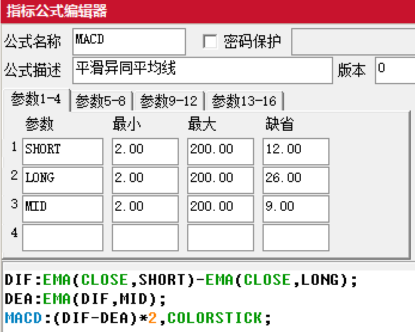
请注意 “绝对差值” 这四个字。这就引出了经典 MACD 的两个致命缺陷：时间维度的失真，和空间维度的错位。
时间的失真很好理解。标普 500 指数在 1957 年的时候只有几十点，那时候的 MACD 数值微乎其微；而到了 2021 年，指数飙升到了几千点，MACD 的读数动辄破百。
那么，2020 年破百的 MACD，代表当时的上涨动能是 1957 年的几十倍吗？
当然不是。这仅仅是因为底层的资产变贵了。用一把刻度随着时间推移而不断膨胀的尺子去做历史回测，本质上就是一种刻舟求剑。
比如下图是上证指数诞生迄今的周线图，叠加了 MACD。你会发现早期 MACD 的柱子很淡定，丝毫看不出市场早期的惊涛骇浪。但这只是当年上证指数绝对值低的问题。
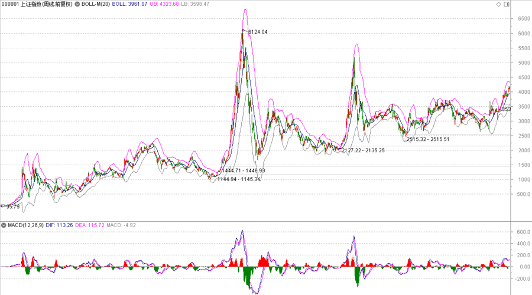
更糟糕的是空间的错位。如果你把标普 500 指数和欧元兑美元的汇率放在一起比较动能，你会发现标普的 MACD 可能是 65，而欧元的读数可能是 - 0.0070。因为两者的绝对价格完全不在一个量级，MACD 在这里失去了跨市场比较的能力。
更致命的是，它的数值无法定义什么是 “过度”。
开车时，超过 150 码一般就可以视为 “速度快” 了。
但在 MACD 的世界里，没有这样一个客观的阈值。
所以传统 MACD 用法，更多是看是否越过零轴线，看是否有顶背离或者底背离。
MACD-V：被波动率驯服
既然发现了病灶，怎么治？
近年，亚历克斯・斯皮罗格鲁（Alex Spiroglou），给出了一个绝妙的解决方案，并得到了 CMT 协会 (技术分析师协会) 的查尔斯・道奖的论文。
斯皮罗格鲁给出的解药非常优雅。既然绝对价格的差异是罪魁祸首，那就找一个东西把它 “标准化”。他引入了技术分析大师威尔斯・威尔德留下的瑰宝 ——ATR（Average True Range，平均真实波幅）。
全新的公式诞生了：
MACD-V = [(12 周期 EMA - 26 周期 EMA) / ATR (26)] × 100
这看似只是一次微调，但在我看来，这是整个指标哲学框架的重塑。
MACD-V 不再去测量干瘪的绝对价差，它衡量的是：当下的动能，究竟是它自身平均波动率的多少倍？
这就像我们在亲密关系里，真正重要的往往不是对方做了一件多么惊天动地的大事，而是这件小事，相对于他平日里的木讷，包含了多少倍的真实心意。
奇迹发生了。
当你用 MACD-V 重新去丈量这个市场时，所有的界限都被打破了。
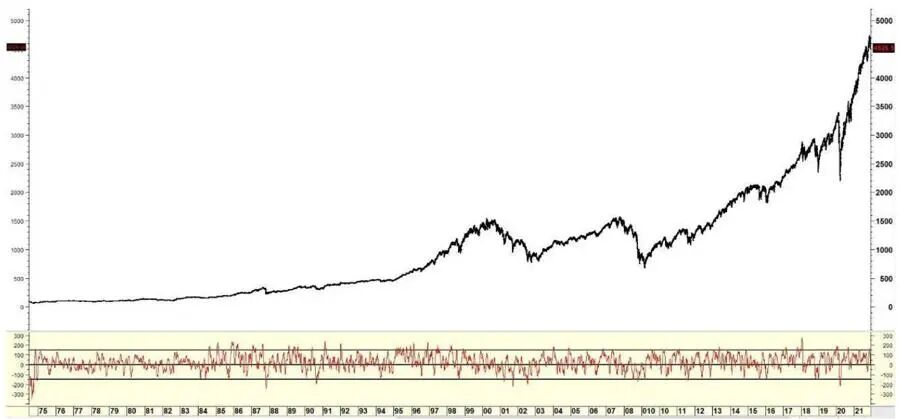
无论是 1987 年的大崩盘还是 2020 年的新冠熔断，无论是狂野的天然气还是温吞的德国国债，它们的 MACD-V 数值在绝大多数时间，都被奇迹般地统一在了一个标准区间内：-150 到 150。
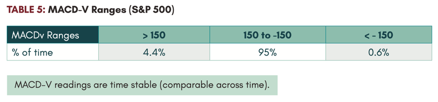
我们终于有了一把可以跨越时间与物种的 “通用尺”。你不再需要记住每个市场奇奇怪怪的极值，只需要知道一点：超过 150，就是极端狂热；低于 - 150，就是极度悲观。这涵盖了历史长河中 95% 的时间。
下图依然是上证指数周线图，我分别叠加了传统的 MACD，和我基于上面公式写的通达信版 MACDV (具体公式见文末)，对比早期的数值，从 MACDV 上才能看出早年的惊涛骇浪。
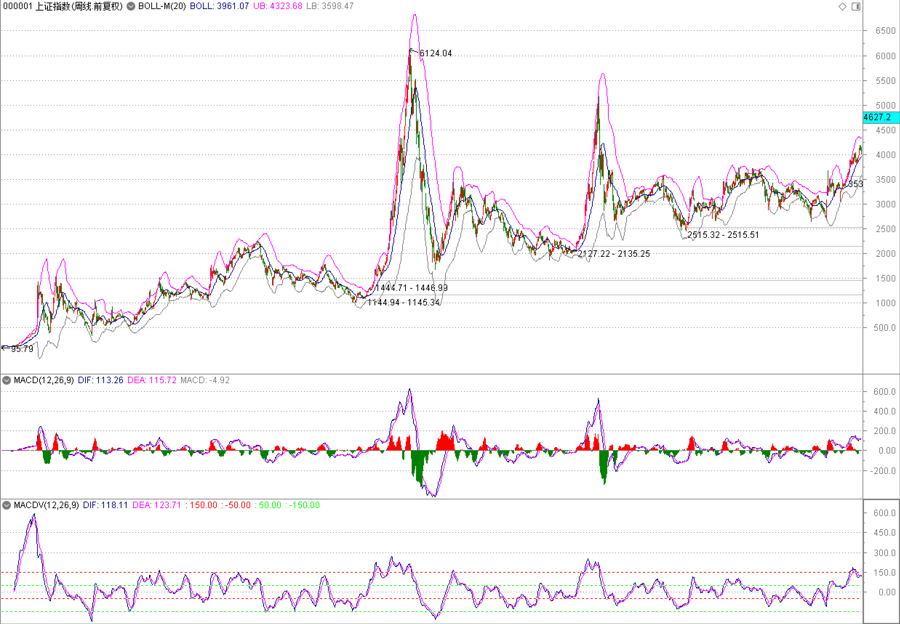
动量的生命周期与底线
亚历克斯还将 MACD-V 与 200 日均线（牛熊分界线）结合起来之后。
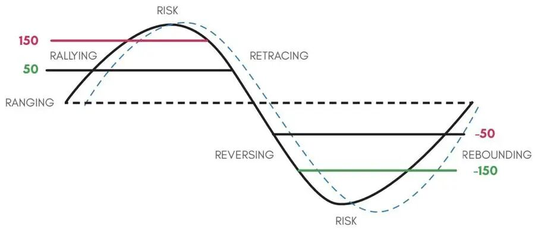
他发现：在牛市里，MACD-V 几乎永远不会跌破 - 150；而在熊市里，它几乎永远不会突破 150。
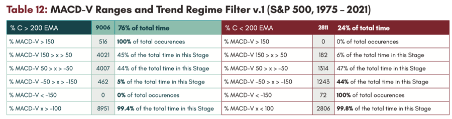
这意味着什么？
这意味着在上升的大趋势里，任何看似惨烈的下跌，只要 MACD-V 还没跌破 - 150 的底线，我们不仅可以坦然面对，甚至还能适时 “拥抱” 的加仓机会。
而在下降趋势里，任何看似强劲的反弹，只要没突破上限，那就是回光返照。
更精妙的是摆动过滤器提供的数据印证：在牛市阶段，超过七成的创新高（摆动高点）都发生在 MACD-V 的高动量区间（50 到 150）。那些真正能带你穿越周期的好资产，在创新高时往往还保持着充沛的体力；而回调的低点，大多落在动量衰竭的弱势区间（-50 到 50）。
为了防止这只是股票市场的 “过度拟合”，亚历克斯甚至在脾气最暴躁的天然气市场上做了验证。
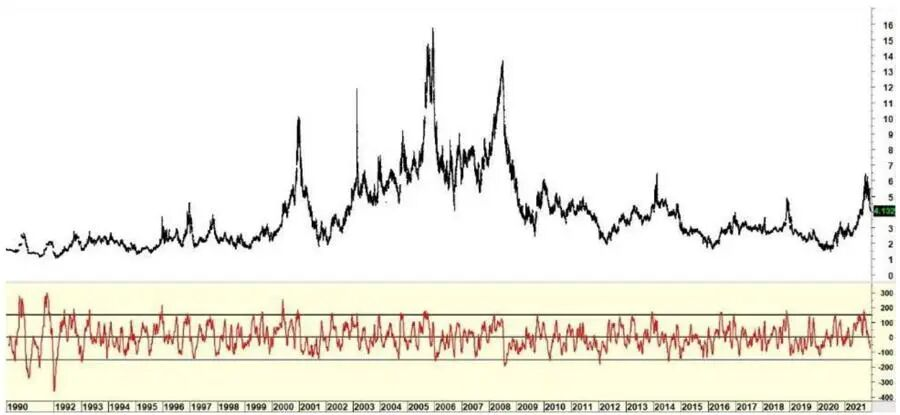
结果惊人地一致。
从这个规模来看，其实 MACD-V 的用法就有点像以前介绍过的 RSI 区间震荡法了。
下图是上证指数 2019 年迄今的日线图，叠加了 MACD-V，可以看到牛市中这个指标一般在 - 50 到 150 (两根红色水平线内区域) 甚至更高震荡，但进入熊市，就是 100 至 - 150 甚至更低之间波动了。
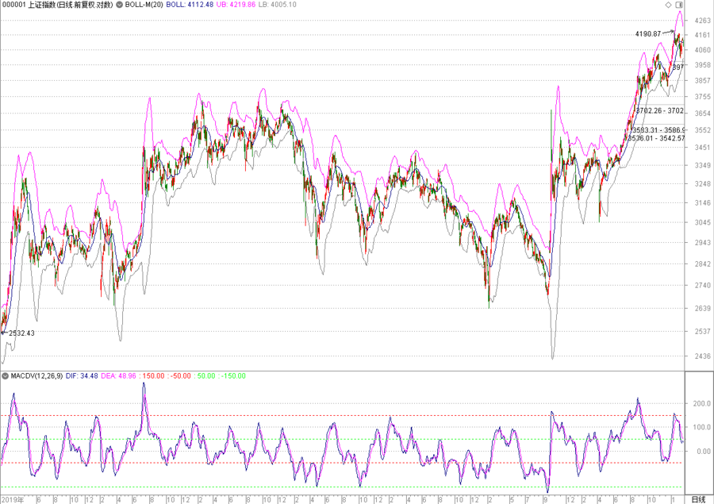
下图是创业板指同期走势，规律相若。不过创业板指，哪怕熊市，初期反弹力度也会大一点，甚至还能触及 150 的红线。当创业板这种也困守于两根绿线区域内，就真是惨烈的大熊市了。
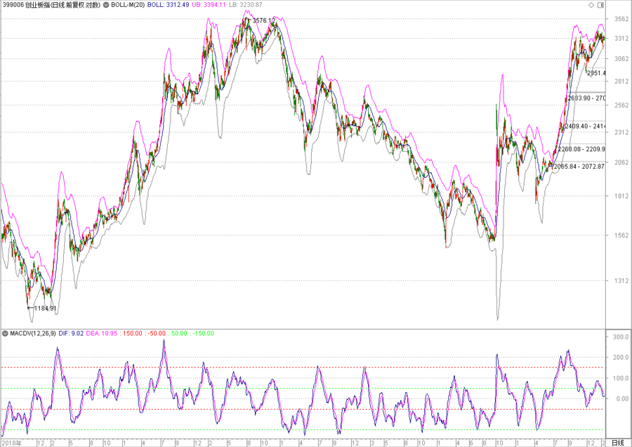
如果相信一个标的还处于牛市，那么在下面那根红线的 - 50 区域加仓，就变成相对风报比比较高的买点了。
附：通达信版MACD-V公式
下面是我根据论文，在通达信上的实现，记得三个参数要设置。
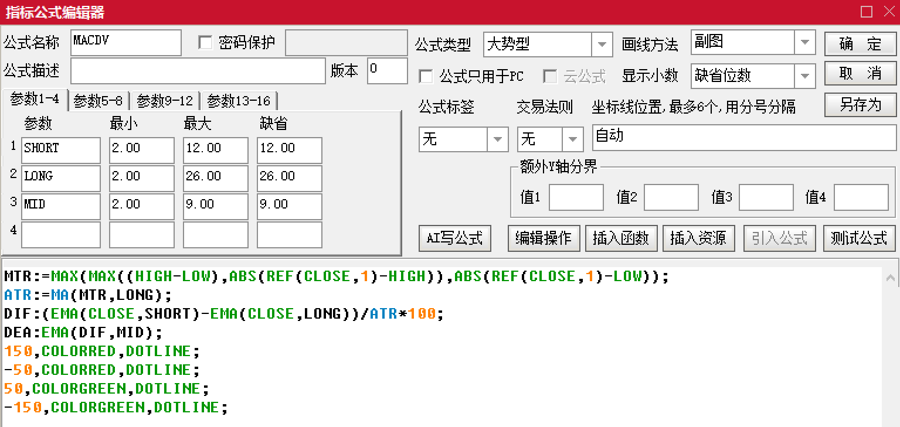
MTR:=MAX (MAX ((HIGH-LOW),ABS (REF (CLOSE,1)-HIGH)),ABS (REF (CLOSE,1)-LOW)); ATR:=MA (MTR,LONG); DIF:(EMA (CLOSE,SHORT)-EMA (CLOSE,LONG))/ATR*100; DEA:EMA (DIF,MID); 150,COLORRED,DOTLINE; -50,COLORRED,DOTLINE; 50,COLORGREEN,DOTLINE; -150,COLORGREEN,DOTLINE;
PS：在原始论文中，还有类似传统 MACD 的柱状数据，名为 MACD-VH，说可以以 + 40 和 - 40 作为均值回归反向操作的指引，不过这个我觉得用起来很容易牛市太频繁离场。如果需要，可以在上面的公式加上下面这句激活：
MACD:(DIF-DEA),COLORSTICK;